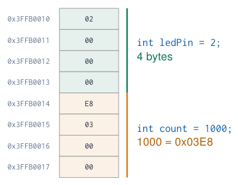
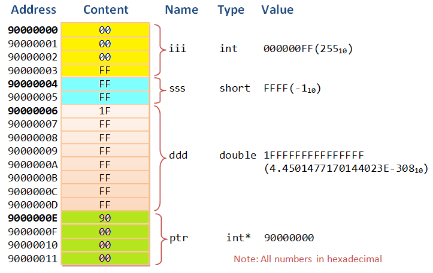
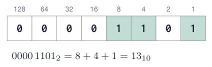
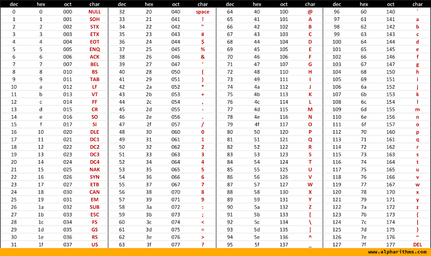

Variables, Types and Numbers¶
What is a variable?¶
-
A named place in memory that holds a value your program can read and change.
-
Every variable has four properties:
-
Name: how you refer to it (
ledPin) -
Type: what kind of value and how many bytes (
int) -
Value: what is stored now (
2) -
Address: where in memory it lives
-
The compiler chooses the address; you choose name, type and value.

Sources: Embedded Programming, lectures 1–6
Variables in memory¶

-
Memory is a long row of bytes, each with an address.
-
A variable occupies as many bytes as its type needs.
-
The ESP32 stores multi-byte numbers little endian: the lowest byte first.
-
A pointer (
int*) is a variable that holds an address: you will meet them in libraries.
Sources: Figure: c-jump.com, via lecture 1 Embedded Programming, lectures 1–6
Declaring and using variables¶
const int ledPin = 2; // constant: never changes
int counter = 0; // declared + initialised
int lastValue; // declared only
void setup() {
Serial.begin(115200);
counter = 10; // assignment
counter = counter + 1;
Serial.println(counter); // 11
}
void loop() {}
-
Declaration:
type name;reserves memory. -
Initialisation: give a first value at the same time.
-
Assignment
=copies the value on the right into the variable on the left. -
const: the compiler refuses any later change. Use it for pin numbers and settings.
Uninitialised local variables
A local variable without a first value contains garbage. Global variables start at 0, but always initialise anyway.
Naming rules and conventions¶
Rules (the compiler checks)
-
Letters, digits and
_; no spaces. -
Must not start with a digit.
-
Case sensitive:
ledPin\(\neq\)LedPin. -
No reserved words:
int,if,for,class…
Conventions (humans check)
-
camelCasefor variables and functions. -
UPPER_CASEfor constants. -
Names describe the meaning, not the type.
| Bad | Good |
|---|---|
int x = 23; |
const int LED_BLUE = 23; |
int t; |
float temperatureC; |
int a1, a2; |
int potRaw, lightRaw; |
bool f; |
bool pumpOn; |
int 2ndValue; |
int secondValue; |
int delay; |
int blinkDelayMs; |
does not compile; delay hides the Arduino function.
Data types on the ESP32¶
Try simulation: Variable types
| Type | Bytes | Range | Typical use |
|---|---|---|---|
bool |
1 | true / false |
flags: pumpOn, buttonPressed |
char |
1 | \(-128 \dots 127\) | one ASCII character 'A' |
uint8_t / byte |
1 | \(0 \dots 255\) | raw bytes, I2C data, LED brightness |
int16_t |
2 | \(-32\,768 \dots 32\,767\) | sensor registers |
int / int32_t |
4 | \(\approx \pm 2.1 \cdot 10^{9}\) | counters, ADC values, pin numbers |
unsigned long / uint32_t |
4 | \(0 \dots 4\,294\,967\,295\) | millis(), micros() |
long long / int64_t |
8 | \(\approx \pm 9.2 \cdot 10^{18}\) | very large counts |
float |
4 | \(\approx\) 7 significant digits | temperature, voltage |
double |
8 | \(\approx\) 15 significant digits | precise calculations |
String |
varies | text | messages (uses heap memory) |
Same name, different size
On an Arduino Uno an int is only 2 bytes (\(-32\,768 \dots 32\,767\)) and double = float. Code that counts to 100 000 works on the ESP32 but overflows on the Uno. Use int32_t, uint8_t … when the size matters.
Binary: how a computer stores numbers¶
Try simulation: Number representation
-
A bit is 0 or 1: off/on, false/true, no current/current.
-
8 bits = 1 byte \(\rightarrow\) \(2^8 = 256\) combinations.
-
Each position has a weight: a power of 2.
-
Everything (numbers, text, images, sound) is eventually stored as bits.
-
The ESP32 is a 32-bit processor: it handles data in 32-bit chunks.

Counting in binary
0, 1, 10, 11, 100, 101, 110, 111, 1000 …
Just like decimal, but you carry at 2 instead of 10.
Sources: Embedded Programming, lectures 1–6
Decimal, binary and hexadecimal¶
Try simulation: Number representation
| Dec | Bin | Hex |
|---|---|---|
| 0 | 0000 | 0 |
| 1 | 0001 | 1 |
| 2 | 0010 | 2 |
| 7 | 0111 | 7 |
| 9 | 1001 | 9 |
| 10 | 1010 | A |
| 11 | 1011 | B |
| 12 | 1100 | C |
| 13 | 1101 | D |
| 14 | 1110 | E |
| 15 | 1111 | F |
-
Hexadecimal (base 16) uses 0–9 and A–F.
-
One hex digit = exactly 4 bits (a “nibble”): a byte is always 2 hex digits.
-
That is why datasheets and I2C addresses use hex:
0x76,0x3C.
The same number, three ways in C++
int a = 60;``int b = 0b00111100;``int c = 0x3C;
Converting by grouping
0x3C \(\rightarrow\) 3 = 0011, C = 1100 \(\rightarrow\) \(0011\,1100_2\) \(\rightarrow\) \(32+16+8+4 = 60\)
Leading zero
int x = 012; is octal (= 10), not twelve!
Converting decimal to binary: step by step¶
Try simulation: Number representation
Method: divide by 2, keep the remainders
| 200 | 100 | rest 0 |
| 100 | 50 | rest 0 |
| 50 | 25 | rest 0 |
| 25 | 12 | rest 1 |
| 12 | 6 | rest 0 |
| 6 | 3 | rest 0 |
| 3 | 1 | rest 1 |
| 1 | 0 | rest 1 |
Read the remainders bottom to top: \(200 = 1100\,1000_2 =\) 0xC8
Check it in the Arduino IDE
void setup() {
Serial.begin(115200);
int x = 200;
Serial.println(x, BIN); // 11001000
Serial.println(x, HEX); // C8
Serial.println(x, DEC); // 200
Serial.printf("0x%02X\n", x); // 0xC8
}
void loop() {}
Powers of two to remember
1, 2, 4, 8, 16, 32, 64, 128, 256, 512, 1024, 2048, 4096 (12-bit ADC), 65 536
Arithmetic and assignment operators¶
int a = 1000;
int b = 2000;
int c;
c = a + b; // 3000
c = b - a; // 1000
c = a * 3; // 3000
c = b / 3; // 666 (integer!)
c = b % 3; // 2 (remainder)
int count = 1000;
count = count + 10; // 1010
count += 10; // 1020
count++; // 1021
count--; // 1020
count *= 2; // 2040
| Operator | Meaning |
|---|---|
+ - * / |
add, subtract, multiply, divide |
% |
modulo: remainder of a division |
+= -= *= /= |
short for x = x + \dots |
++ -- |
add / subtract 1 |
Modulo is surprisingly useful
n % 2 == 0 \(\rightarrow\) even number
i % 4 \(\rightarrow\) counts 0, 1, 2, 3, 0, 1, … (cycle 4 LEDs)
seconds % 60 \(\rightarrow\) seconds within the minute
Sources: Embedded Programming, lectures 1–6
Integer pitfalls: division and overflow¶
Try simulation: Variable types
int sum = 10 + 20 + 30;
int avg1 = sum / 4; // 15: wrong count
int avg2 = sum / 3; // 20: correct
float r1 = 7 / 2; // 3.0 (!)
float r2 = 7 / 2.0; // 3.5
float r3 = (float) 7 / 2; // 3.5 (cast)
uint8_t level = 255;
level = level + 1; // 0 (overflow)
int big = 2147483647;
big = big + 1; // -2147483648
-
int / int = int: the fraction is thrown away, before storing it in a
float. -
Make one operand a
float(2.0) or cast with(float). -
Overflow: a type has a fixed size; past the maximum it wraps around, like a car odometer.
-
unsigned longwraps too:millis()returns to 0 after \(\approx\) 49.7 days.
Typical student bug
float v = raw * 3.3 / 4095; is fine, but float v = raw / 4095 * 3.3; is always 0 for raw \(<\) 4095. Why?
Floating point, characters and text¶
Try simulation: ASCII characters
double pi = 3.14159;
float volts = 3.3 * (1564 / 4095.0); // 1.26 V
char letter = 'A'; // stored as 65
char next = letter + 1; // 'B'
char digit = '0' + 7; // '7'
String name = "ESP32";
String msg = "Hello, World!";
Serial.println(msg + " from " + name);
Serial.println(name.length()); // 5
Serial.println(volts, 3); // 1.260
-
float/doublestore fractions; they are approximations: never test them with==. -
A
charis a 1-byte number that the ASCII table maps to a character. -
'A'(single quotes) is one char;"A"(double quotes) is text. -
Stringglues text with+: handy, but uses heap memory; avoid in fast loops.
Sources: Examples from lecture 1 Embedded Programming, lectures 1–6
The ASCII table¶
Try simulation: ASCII characters

-
128 codes: control characters (0–31), symbols, digits, letters.
-
'0'= 48 …'9'= 57 -
'A'= 65,'a'= 97: difference 32. -
'\ n'= 10 (new line),'\ r'= 13 (carriage return).
Trick
Digit character to number: int d = c - '0';
Quiz: numbers and types¶
-
Convert \(1010\,1010_2\) to decimal and hexadecimal.
Check your answer
\(128+32+8+2 = 170\) =
0xAA. -
The BME280 sensor has I2C address
0x76. What is that in decimal and binary?Check your answer
\(7 \cdot 16 + 6 = 118\) = \(0111\,0110_2\).
-
How many different values can a 12-bit ADC produce?
Check your answer
\(2^{12} = 4096\) values: 0 … 4095.
-
What does
float x = 9 / 2;store?Check your answer
4.0: integer division happens first. Write
9 / 2.0. -
Which type for: a temperature, the number of button presses, a pin number, a yes/no flag?
Check your answer
float,unsigned int(oruint32_t),const int(oruint8_t),bool.
Exercises: variables and numbers¶
Try simulation: Number representation
Try simulation: Variable types
Exercise 1 – Number printer
Print every number from 0 to 32 in decimal, binary and hexadecimal in one table on the Serial Monitor. Use Serial.print(x, BIN) and Serial.print(x, HEX).
Exercise 2 – Choose the types
Declare the variables of a weather station: temperature, humidity, pressure in hPa, number of measurements, station name, alarm on/off, last measurement time. Justify each type.
Exercise 3 – Overflow hunt
Make a uint8_t counter that increases every 50 ms and print it. Predict and observe when it overflows. Repeat with int8_t.